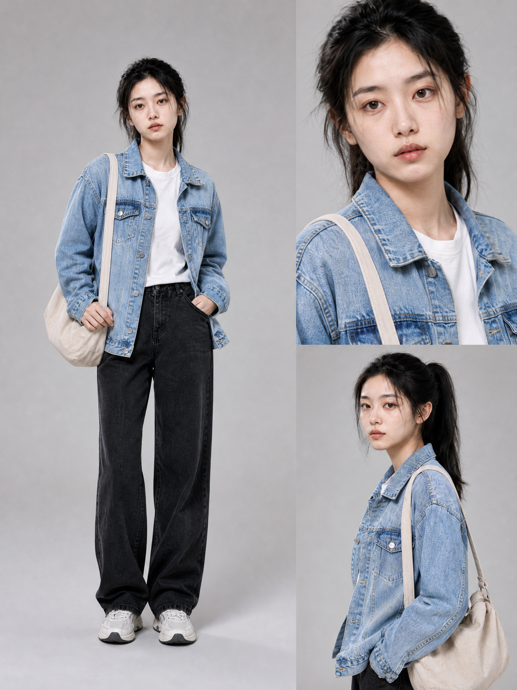
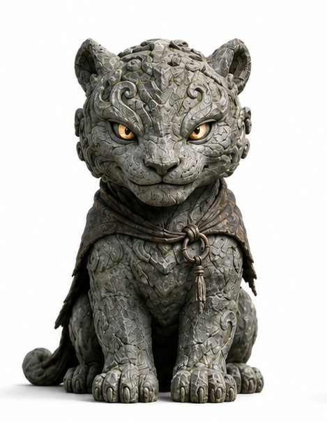
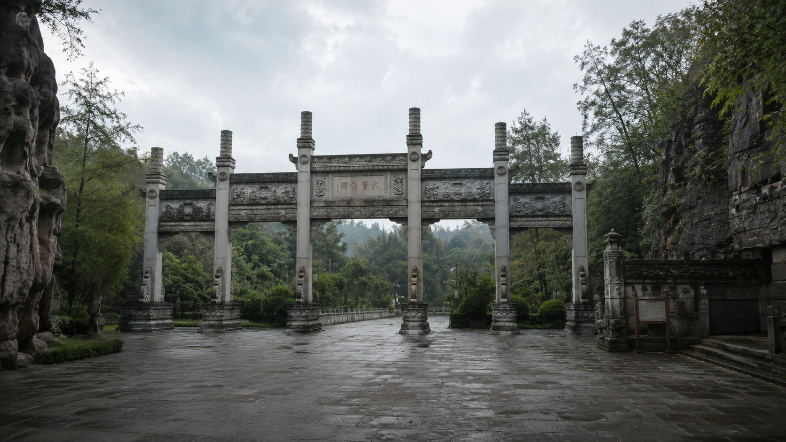
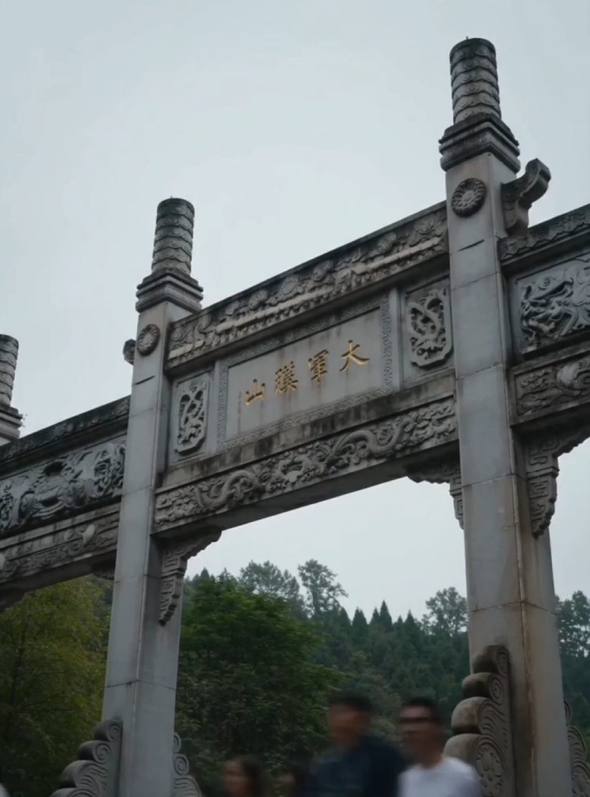
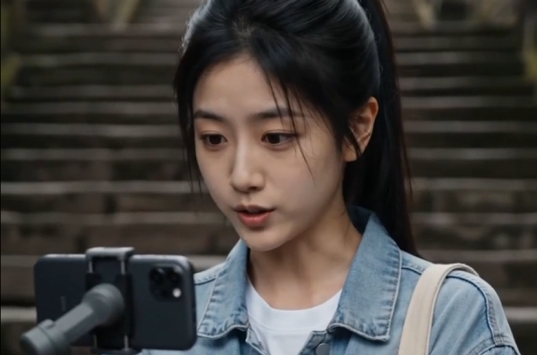
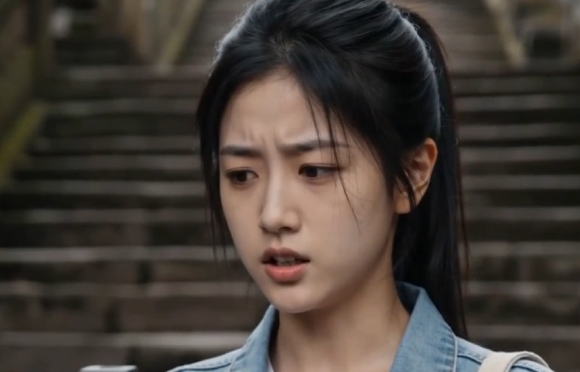
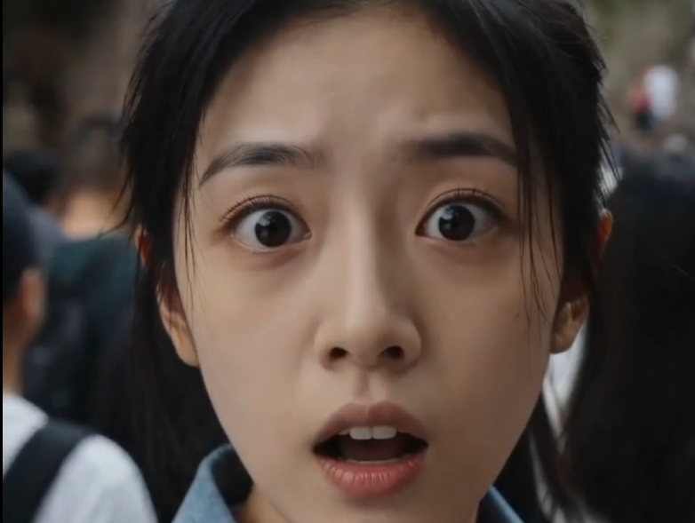
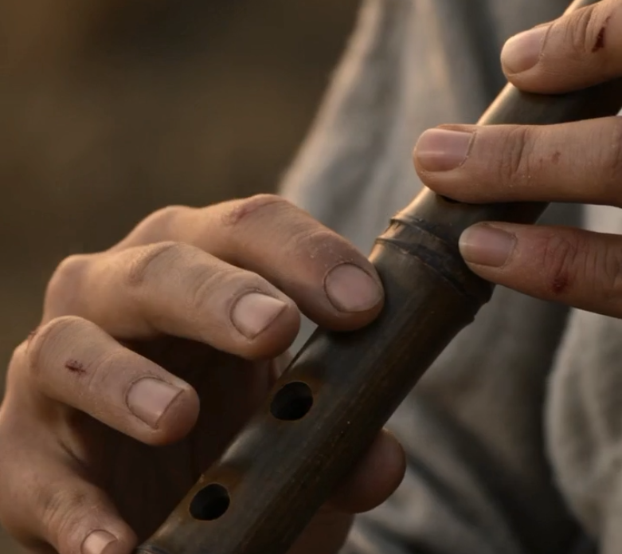
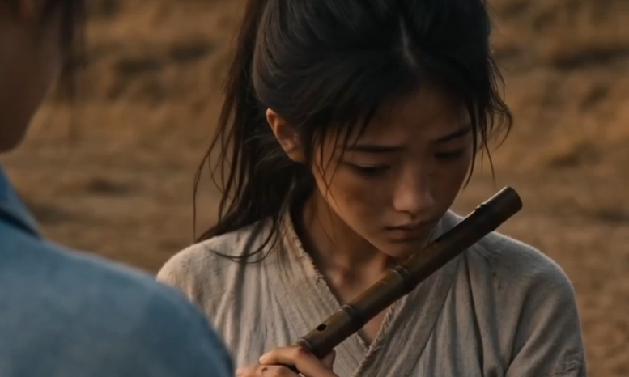

05 / AI ANIMATION
AI漫剧「石中信」
故事编剧 · AI角色生成 · 动画短片制作
01 / CREATIVE CORE
创意内核与故事原点
创作初衷：以大足石刻为故事切入点，通过一场现实与历史交织的奇幻旅程，讲述年轻创作者林知遥从最初只关注石刻的宏伟外观， 到逐渐看见石刻背后普通人的生活、情感与劳动。借助吹笛少女、牧牛少年、沽酒女子和无名匠人的故事， 让沉默的石头重新拥有温度，探讨传统文化传承中人与历史之间的情感连接。
传播目标： 面向18—28岁年轻群体，以轻奇幻、现实成长与文化叙事相结合的方式， 降低传统文化的理解门槛，让观众在人物故事与情感共鸣中认识大足石刻，感受文物背后鲜活的人间故事， 提升年轻群体对传统文化的关注与认同。
核心叙事： 一个陷入创作困境的大学生，在一次意外中走进石刻记忆， 与不同时代的普通人相遇，最终明白：真正值得记录的不只是石头上的雕刻， 更是石头背后那些曾经鲜活生活过的人。
DURATION
三集短剧
TOOLS
Image2 / seedance 2.0 / PR / 剪映......
PLATFORM
抖音 / B站 / 小红书等渠道
02 / CHARACTER & WORLD
世界观与角色设定
《石中信》采用东方现实奇幻的叙事方式，以大足石刻为现实与历史记忆的连接点。 石刻不仅是承载艺术与历史的静态载体，也封存着不同时代普通人的生活片段。当现实中的林知遥遇见石虎， 便开启了一段穿梭于石刻记忆之间的旅程，在石、纸、墨交织的奇幻空间中，重新认识那些被岁月留在石头里的人。



03 / STORYBOARD
分镜设计与镜头语言
全片以「慢推+固定长镜头」为主，克制的运镜配合环境音，强化真实感与代入感。

01 / 全景 · 空镜铺垫

02 / 中景 · 人物出场

03 / 近景 · 细节特写

04 / 特写 · 情绪落点
04 / ITERATION
AI生成与迭代优化
针对AI生成的常见问题（手部崩坏、面部一致性、画面闪烁、逻辑性问题等）进行定向调优，重构、通过控形、逐帧修复、后期剪辑等， 提升成片完成度。
V1.0 初稿

问题：逻辑性问题，竖吹笛少女动作不自然，手部崩坏严重
V3.0 终稿

优化：局部重绘+定向优化+后期校色
05 / DEMO FILM